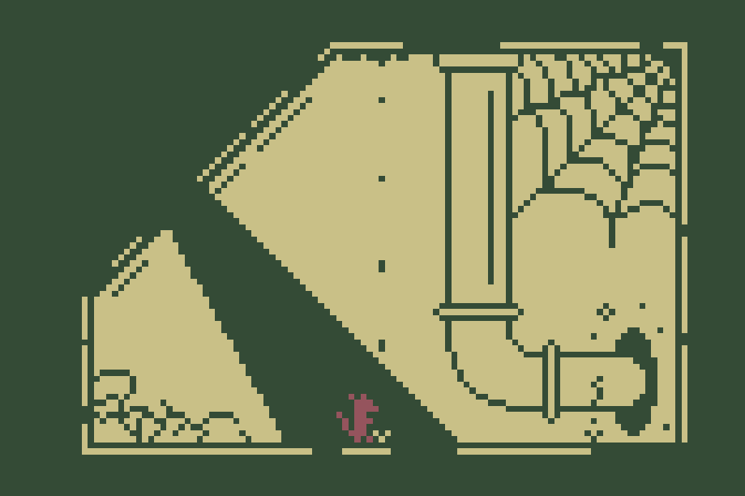
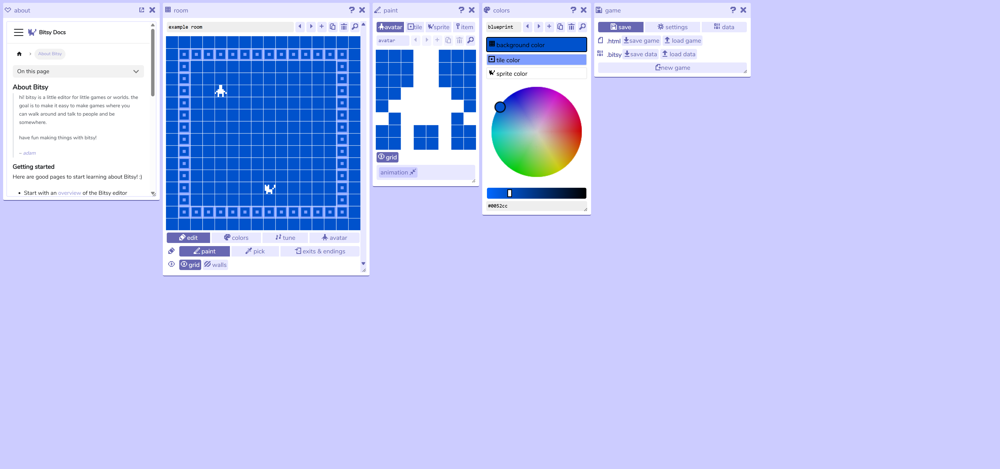

Consume
A short narrative game made in Bitsy.
About the Game
Consume is a short narrative game made in Bitsy, following a rat moving through a series of strange rooms and encounters. The story is told almost entirely through exploration, environmental changes, and dialogue.
Design Goals / Process

My main goal was to tell a meaningful narrative using only 2D movement, rooms, and dialogue.
A central part of the story was the relationship between the rat and a piece of tomato, and what that object could represent emotionally or symbolically to the player.
Because the project was small, I created a simple Google Docs design document instead of using Obsidian. For each room, I planned its visuals, the NPCs or objects inside it, and the dialogue the player would encounter.
Learnings

This project helped me learn the Bitsy engine, how to use Bitsy plugins, and how to structure a small narrative experience.
It also gave me more experience with narrative design, especially telling a story with very limited mechanics and visual tools.
Challenges
My biggest challenge was making the experience feel meaningful to the player.
By the end, I felt that parts of the game became blocks of dialogue without a strong player goal or purpose. The player could move forward and read the story, but their actions did not always feel connected to the narrative.
The project was also not playtested, so I never had the opportunity to see whether players interpreted the story, the tomato, or the rat's journey in the way I intended.